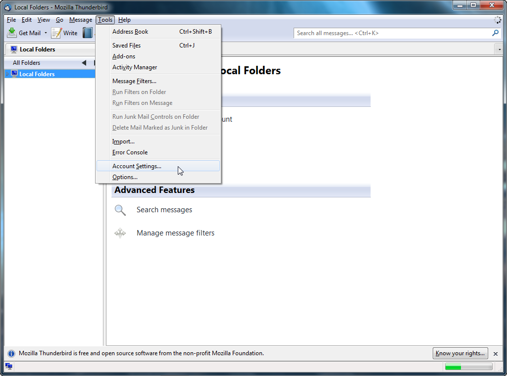
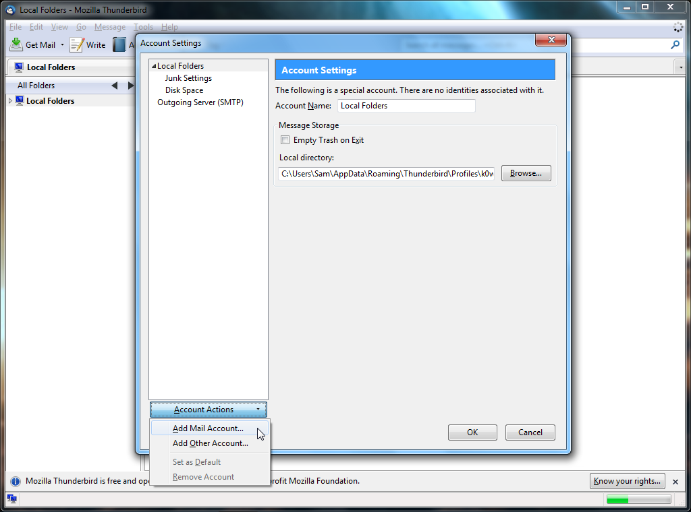
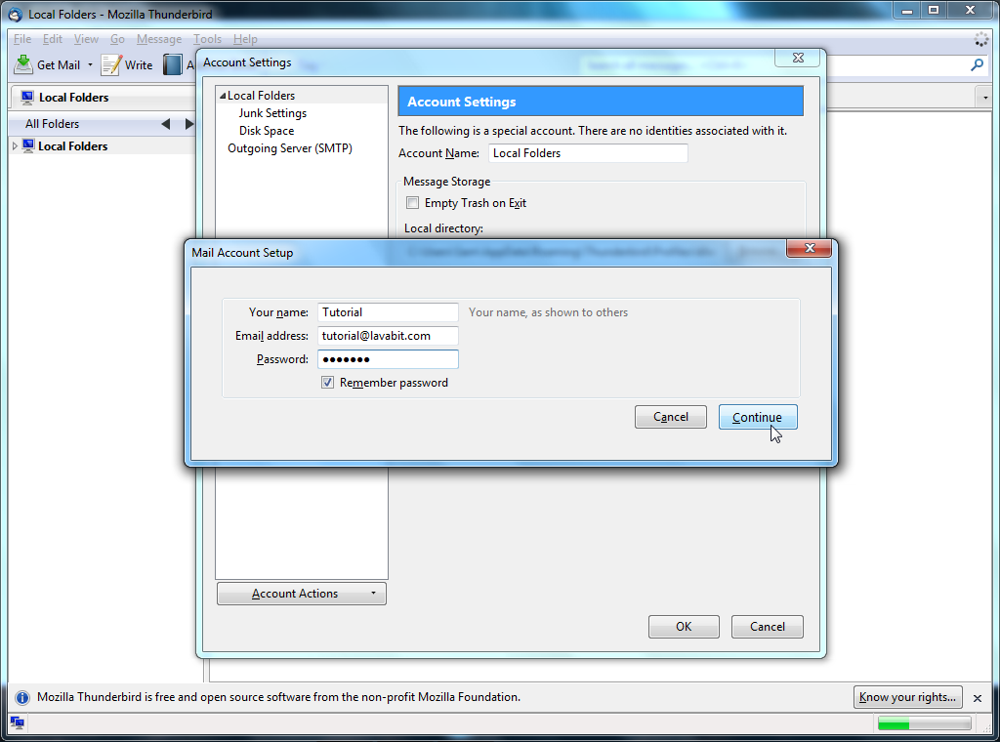
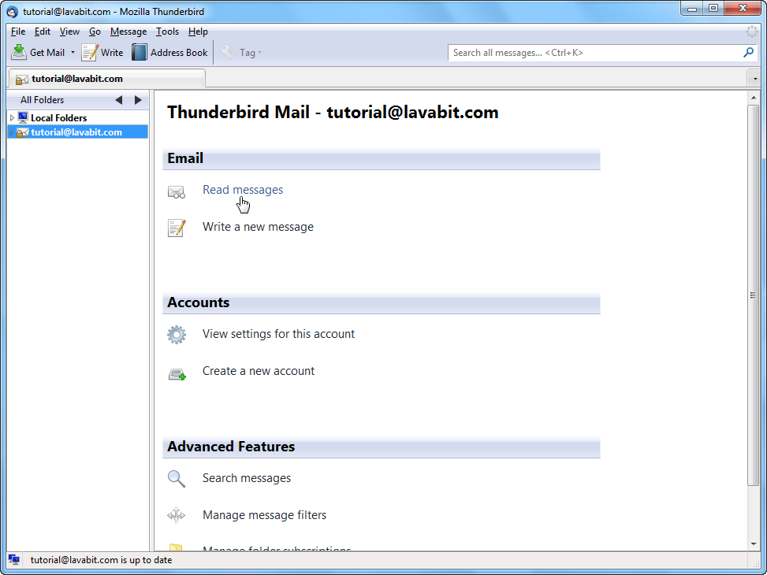
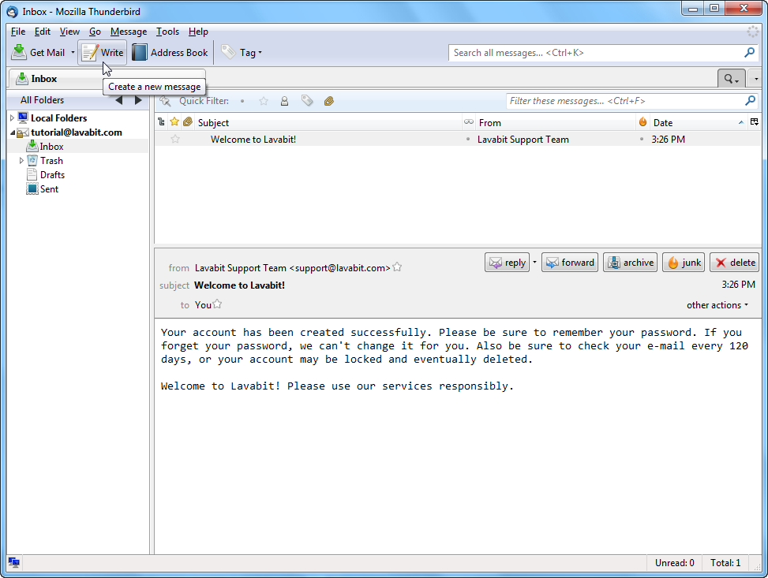

Thunderbird Tutorial
This short tutorial will show you how to configure Thunderbird for use with $Provider. If you continue having difficulty after following this tutorial, please check our troubleshooting page for solutions to the most common problems. And if all else fails, please use our contact page to get in touch with the $Provider Support Team.
Please note that the following screenshots were taken in version 3.1.
Step One
To add a new account to an existing Thunderbird installation, select the ‘Tools’ menu and then the ‘Account Settings’ option.
If you’re starting Thunderbird for the first time, it will automatically display the Mail Account Setup prompt and you can skip to Step Three.
Step Two
Click on the 'Account Actions' drop down and select 'Add Mail Account'.
Step Three
In the 'Your name' field, enter the name you would like to have displayed to your recipients. You will most likely use your full name but you are free to enter anything you wish such as your company name or a short description of the account if it serves a special purpose.
Enter your $Provider e-mail address and password in the next two fields. You can choose to have Thunderbird remember your password by checking the 'Remember password' box. If you do, be sure to write your password down and store it in a safe place in case you lose your account information for any reason. If you leave it unchecked, Thunderbird will prompt you for the password everytime you send or receive email. Click 'Continue' to move to Step Four.

Step Four
At this time, Thunderbird will detect the optimal settings for your account and automatically configure everything for you.
By default, Thunderbird chooses IMAP over the alternative, POP3, for incoming mail. IMAP has the benefit of leaving your messages on the server intact so that you can sync your mail with multiple computers or devices. Thunderbird will also choose the default ports for both IMAP and SMTP with STARTTLS for security. STARTTLS offers the same security as SSL so it is perfectly fine to use the default settings.
If you are happy with these settings, click 'Create Account' to finish. Otherwise, you can click the 'Edit' button above 'Create Account' and configure everything to meet your needs. Take a look at the configuration settings to see all of the available ports for each protocol.
Step Five
If you created the account from the 'Account Settings' menu, press 'Ok' to close it. You will see your new email address listed in the frame on the left. Click on your account then choose 'Read messages' to view your mail.
Step Six
You should see a message from the $Provider Support Team in your Inbox. You can also try sending an e-mail to make sure your outgoing mail works as well.
For most users, this is the happy ending to the story. If you hit a snag, please check our troubleshooting page for solutions to the most common problems. Of course, if you’re still stuck, please use our contact page to get help from the $Provider Support Team.